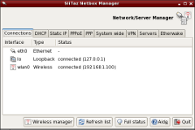
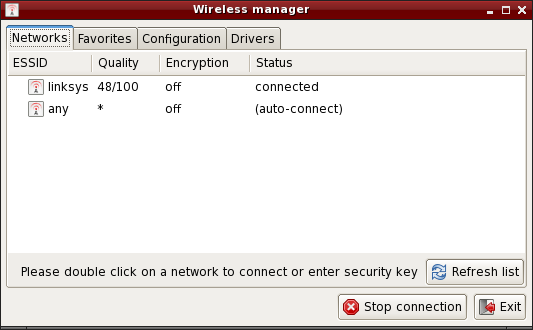

Configuration du réseau
- A propos du réseau sur SliTaz.
- Netbox - Configuration graphique du réseau.
- Wifibox - Configuration graphique du réseau sans fil.
- /etc/hostname - Le nom de machine.
- /etc/network.conf - Fichier de configuration du réseau.
- IP dynamique - Client DHCP udhcpc.
- IP static - Utilisation d'un adresse fixe.
- Connexion ADSL en pppoe kernel-mode.
- Connexion ADSL avec rp-pppoe.
- Liste des interfaces et des routes.
- Gestion du pare-feu - (firewall).
- Configuration du serveur web.
- Gestion du serveur SSH.
A propos du réseau sur SliTaz
Par défaut SliTaz lance le client DHCP (udhcpc) sur eth0 lors du boot. Si
votre carte réseau a bien été reconnue comme une interface eth0, et que vous
utilisez un routeur, votre connexion devrait déjà fonctionner. C'est une
configuration dynamique, à chaque démarrage du système le client DHCP obtient
une nouvelle adresse IP depuis le serveur DHCP, qui est intégré au
router, ou situé sur une autre machine. Pour changer la configuration par
défaut vous devez passer par le fichier /etc/network.conf décrit ci-dessous.
Pour les personnes utilisant PPPOE, vous pouvez utiliser
les outils fournis par rp-pppoe et installés par défaut sur SliTaz.
Netbox - Configuration graphique du réseau
Netbox est un petite interface graphique permettant de facilement configurer une interface réseau Ethernet en utilisant le protocole DHCP ou en demandant une adresse IP fixe. Les onglets DHCP et Staic IP permettent de démarrer ou stopper la connexion et change automatiquement les valeurs dans les fichiers système. Les connexions Ethernet sont des connection cablées (RJ45) et ne nécessite pas d'authentification. Netbox fournit aussi un onglet System wide depuis lequel vous pouvez directement éditer les fichiers de configuration système. Les connections PPPoE ou PPP demandant un nom d'utilisateur et un mot de passe on leur propre onglet. L'outils permet encore de configurer différents serveurs: SSH, Inetd, ZeroConf, DHCP, PXE, DSN, Rsync, HTTP. Il aussi possible de créer un réseau privé virtuel ou VPN avec les outils inclus de base dans la distribution.
Vous pouvez lancer Netbox depuis le menu "Outils système" (System tools) → "Netbox Configurer le réseau" ou depuis un terminal graphique. C'est un outil qui permet de modifier des configuration système, il faut donc être administrateur (root) pour l'utiliser :
$ subox netbox
Wifibox - Configuration graphique du réseau sans fil
Wifibox est une petite interface permettant de configurer une connexion à un réseau sans file (Wifi, Wireless ou Wlan). L'onglet 'Netwoks' affiche la liste des réseaux disponibles, il suffit de double cliquer sur un nom de réseau pour établir la connexion, si le réseau est sécurisé, la clé vous sera alors demandée.
L'onglet 'Favorites' permet de préconfigurer ses réseaux préférés, une fois un réseau ajouté il suffit de double cliquer sur le nom du réseau pour établir la connexion. L'onglet 'Configuration' permet de configurer une connexion manuellement avec les paramètres avançés tels que le mode ou le canal. L'onglet 'Drivers' permet de configurer une carte réseau, il y a 3 cas de figure: ,
- La carte est directement supportée par le noyau via un module.
- La cartre à besoin d'un module et d'un firmware non-libre pouvant être installé automatiquement via l'outil de détection du matériel.
- La carte n'est pas supportée par Linux et le driver Windows doit être installé via le gestionnaire de pilotes Windows (tazndis).
/etc/hostname - Le nom de machine
Le fichier /etc/hostname configure le nom de la machine. Le nom de machine est chargé au démarrage du système avec la commande 'hostname'. Sans argument cette commande retournera le nom de machine actuel :
$ hostame
Pour changer le nom de machine vous pouvez utiliser la commande
echo ou utiliser un des éditeurs de texte disponible sur SliTaz
(il faut être root). Exemple avec echo et le nom
de machine kayam :
# echo "kayam" > /etc/hostname
/etc/network.conf
Le fichier /etc/network.conf est le fichier de configuration du réseau sur votre système SliTaz. Sa syntaxe est simple, vous pouvez modifier son contenu avec un éditeur de texte tel que Nano. Le fichier /etc/network.conf est utilisé par le script /etc/init.d/network.sh pour configurer les interfaces réseau au démarrage du système.
Le fichier de configuration du réseau (network.conf) vous permet de lancer ou non le client DHCP au boot. Vous pouvez aussi spécifier une adresse IP fixe avec son masque de sous réseau, la passerelle par défaut, et le serveur DNS à utiliser.
IP dynamique - Client DHCP udhcpc
Le client DHCP udhcpc fourni avec Busybox utilise le script
/usr/share/udhcpc/default.script pour obtenir une adresse IP dynamiquement
au boot. Il supporte diverses options que vous pouvez connaître avec l'option
--help :
# udhcpc --help
Pour ne pas lancer udhcpc sur eth0, ou modifier l'interface (ex: eth1) vous devez passer par le fichier /etc/network.conf, et spécifier "no" à la variable DHCP= :
# Dynamic IP address. # Enable/disable DHCP client at boot time. DHCP="no"
IP fixe - Utilisation d'un adresse spécifique
Vous pouvez spécifier une adresse IP fixe à configurer au démarrage du système, en mettant la valeur "yes" à la variable STATIC= :
# Static IP address. # Enable/disable static IP at boot time. STATIC="yes"
Pour que la configuration fonctionne, vous devez spécifier une adresse IP, son masque de sous réseau, la passerelle par défaut (gateway), et le serveur DNS à utiliser. Exemple :
# Set IP address, and netmask for a static IP. IP="192.168.0.6" NETMASK="255.255.255.0" # Set route gateway for a static IP. GATEWAY="192.168.0.1" # Set DNS server. for a static IP. DNS_SERVER="192.168.0.1"
Connexion internet ADSL en pppoe kernel-mode
Pré-requis: le support ppp et pppoe doit être activé dans le noyau (dur ou
modules) et l'interface ethernet configurée. Vous devez indiquer à ppp
d'utiliser le plugin rp-pppoe du noyau dans /etc/ppp/options :
plugin rp-pppoe.so name <votre identifiant de connexion FAI> noipdefault defaultroute mtu 1492 mru 1492 lock
Si vous avez compilé le support de votre carte réseau en module dans le noyau, vous devrez activer ce dernier dans /etc/rcS.conf:
LOAD_MODULES="<votre module>"
Modifier le fichier /etc/ppp/pap-secrets ou /etc/ppp/chap-secrets :
# client server secret IP addresses "votre_login_fai" * "mot_de_passe"
Les fichiers /etc/host.conf et /etc/resolv.conf devraient être automatiquement renseignés. C'est tout ! Pour vous connecter à internet, il suffit simplement de taper :
pppd eth0
Connexion pppoe avec rp-pppoe
Pour configurer sa connexion internet ADSL via le protocole PPPOE, SliTaz
fournit la suite d'utilitaires du paquet rp-pppoe. L'utilisation
de pppoe-setup est un jeu d'enfant et vous permet de configurer
rapidement le réseau. Si vous utilisez DHCP c'est encore plus facile, puisque
c'est le serveur de votre FAI (Fournisseur d'accès internet) qui va s'occuper
de tout. Si vous n'avez pas le DHCP vous devez commencer par désactiver son
utilisation via la variable DHCP="no" du fichier de configuration
/etc/network.conf. A noter que pour modifier des fichiers de
configuration système et se connecter, vous devez devenir administrateur via
la commande su. Pour installer rp-pppoe et changer la variable
DHCP avec Nano (Ctrl + x pour sauver et quitter) :
$ su # tazpkg get-install rp-pppoe # nano /etc/network.conf
Configurer avec pppoe-setup
Pour commencer à configurer votre connexion PPPOE, vous devez ouvrir un
terminal X ou utiliser la console Linux pour lancer pppoe-setup
et répondre aux questions :
# pppoe-setup
- Tapez votre nom d'utilisateur. A noter qu'il s'agit du nom d'utilisateur avec lequel vous communiquez avec votre FAI, ils est différent de ceux du système, bien sûr.
- Interface internet, il s'agit par défaut de eth0 sauf si vous en avez plusieurs, auquel cas vous aurez eth1, eth2, etc.. généralement la touche entree suffit.
- Si vous avez un lien ADSL permanent répondez ici par oui, sinon par non (valeur par défaut).
- Spécifiez les DNS primaire et secondaire de votre FAI, il vous les communiquera, n'hésitez pas à les lui demander.
- Tapez le mot de passe avec lequel vous communiquez avec votre FAI, à noter que vous devrez le tapez deux fois.
- Choisir le firewall ou pare-feu en fonction de votre matériel, si vous avez un routeur vous pouvez entrer 2 sinon 1. En cas de doute tapez 1.
Démarrer et arrêter la connexion
Toujours en ligne de commande, il suffit de lancer pppoe-start
pour démarrer la connexion. Quelques secondes puis le système vous dit qu'il
est connecté. S'il vous donne un message du genre TIMED OUT c'est que vous
avez mal configuré ou que les branchements sont défectueux. Revérifiez votre
cablage et reprenez l'installation au début. Pour démarrer sa connexion :
# pppoe-start
Pour arrêter la connexion vous pouvez utiliser l'utilitaire
pppoe-stop, toujours en ligne de commande.
Liste des interfaces et des routes
Vous pouvez lister les interfaces réseau disponibles avec la commande
ifconfig suivie de l'option -a, ou afficher
l'aide avec l'option --help :
# ifconfig -a # ifconfig --help
Pour afficher la table de routage IP du noyau vous pouvez utiliser la commande
route sans arguments :
$ route
Gestion du pare-feu (firewall)
SliTaz fourni un pare-feu très basic, les régles de sécurité du noyau sont lancées et les règles d'iptables sont désactivées par défaut. Vous pouvez activer/désactiver son éxécution au démarrage, et créer de nouvelles régles via le fichier de configuration : /etc/firewall.conf
Le script du firewall fournit par défaut sur SliTaz, commence par
configurer les options propre au noyau: les redirections ICMP, les sources de
routage, log des adresses impossibles et les filtres contre le spoofing. Le
script lance ensuite les règles d'Iptables définies dans la fonction
iptables_rules() du fichier de configuration : /etc/firewall.conf
Le firewall utilise l'application Iptables, il se compose de deux fichiers : Le fichier de configuration /etc/firewall.conf et le script /etc/init.d/firewall, que vous ne devriez pas avoir besoin de modifier. A noter qu'il y de nombreuses options avec Iptables, pour de plus amples informations, référez-vous à la documentation officielle de Netfilter/iptables disponible en ligne sur : www.netfilter.org/documentation/
Démarrer, arrêter, redémarrer le firewall
Le script /etc/init.d/firewall vous permet de démarrer/redémarrer, d'arrêter et d'afficher le status du firewall. L'option redémarrer est souvent utilisée pour tester de nouvelles règles, après modification du fichier de configuration. Exemple :
# /etc/init.d/firewall restart
Activer/désactiver le firewall au boot
Pour activer/désactiver les options de sécurité propre au noyau, mettez "yes" ou "no" à la variable KERNEL_SECURITY= :
# Enable/disable kernel security at boot time. KERNEL_SECURITY="yes"
Et pour activer/désactiver les règles d'iptables, il faut modifier la variable IPTABLES_RULES= :
# Enable/disable iptables rules. IPTABLES_RULES="yes"
Ajouter, supprimer, ou modifier les règles d'iptables
fichier de configuration: /etc/firewall.conf. En bas du fichier vous trouverez
fichier de configuration: /etc/firewall.conf. En bas du fichier vous touverez
une fonction : iptables_rules() contenant toutes les commandes
d'iptables à lancer lors du démarrage du firewall. Pour supprimer une règle,
nous vous conseillons de commenter les lignes correspondantes avec :
#. A noter qu'il ne faut pas laisser cette fonction vide, si
vous voulez désactiver les règles d'iptables, il est préférable de mettre
"no" à la variable IPTABLES_RULES= du fichier de configuration.
Exemple de règles iptables. On refuse toutes les connexions entrantes, et sortantes, puis on accepte les connexions sur l'hôte local, le réseau local, les ports 80 et 22 utilisés respectivement par le serveur web HTTP et le serveur sécurisé SSH, et le port 21 pour le FTP. C'est donc très restrictif comme règles:
# Netfilter/iptables rules.
# This shell function is include by /etc/init.d/firewall.sh
# to start iptables rules.
#
iptables_rules()
{
# Drop all connexions.
iptables -P INPUT DROP
iptables -P OUTPUT DROP
# Accept all on localhost (127.0.0.1).
iptables -A INPUT -i lo -j ACCEPT
iptables -A OUTPUT -o lo -j ACCEPT
# Accept all on the local network (192.168.0.0/24).
iptables -A INPUT -s 192.168.0.0/24 -j ACCEPT
iptables -A OUTPUT -d 192.168.0.0/24 -j ACCEPT
# Accept port 80 for the HTTP server.
iptables -A INPUT -i $INTERFACE -p tcp --sport 80 -j ACCEPT
iptables -A OUTPUT -o $INTERFACE -p tcp --dport 80 -j ACCEPT
# Accept port 22 for SSH.
iptables -A INPUT -i $INTERFACE -p tcp --dport 22 -j ACCEPT
iptables -A OUTPUT -o $INTERFACE -tcp --sport 22 -j ACCEPT
# Accept port 21 for active FTP connections.
iptables -A INPUT -i $INTERFACE -p tcp --dport 21 -j ACCEPT
iptables -A OUTPUT -i $INTERFACE -p tcp --sport 21 -j ACCEPT
}